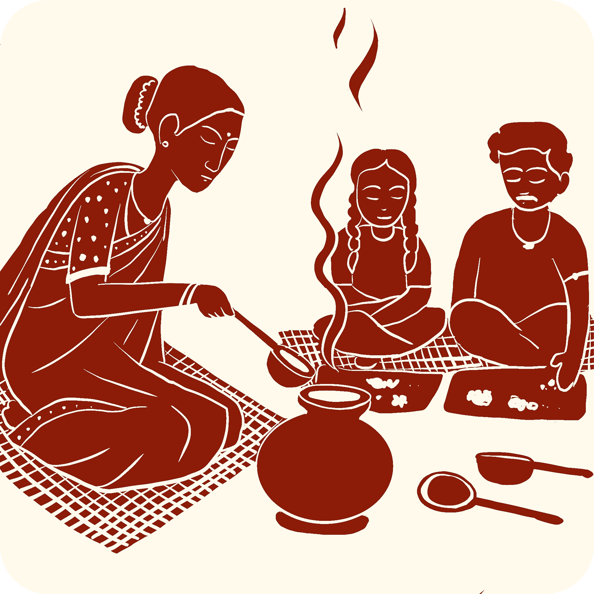

The most important tool in a Tulu kitchen

Welcome to the heart of the kitchen, where delicious Tulu food was cooked and served!
This curved coconut shell with a handle is called "Sout." It was the most important tool in a Tulu kitchen! The Sout could do almost everything — scoop rice from the pot, pour sambar (spicy lentil soup) into bowls, measure milk, pour oil for cooking, and even be used as a drinking bowl!
When made correctly, not a single drop of liquid would leak from a coconut shell ladle! It required incredible skill. Tap each step to learn more:
Sometimes coconut shells were too hard and would crack while working on them. Tulu people discovered a clever solution: take a Bannangayu — a coconut that hadn't fully grown yet — and soak and boil it in hot water. It became as flexible as rubber! You could bend it any direction you wanted, making it far easier to shape without breaking.